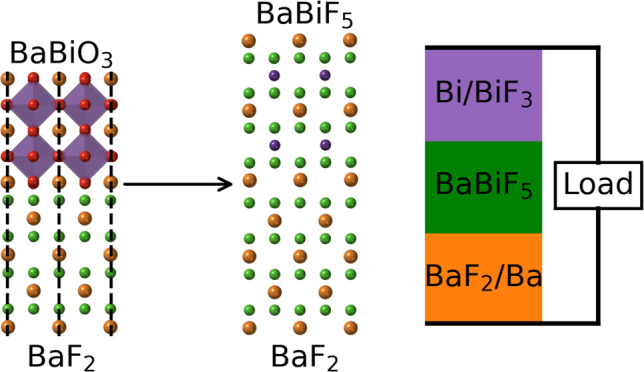

Personal
AI Impacts on Software Power
February 2026
Persistent differential returns are driven by power. Power comes in seven forms: scale economies, network economies, switching costs, cornered resources, counter positioning, branding, and process power. For anyone familiar with Hamilton Helmer, this will sound familiar. His "seven powers" framework is a classic starting point for thinking about businesses...
Publications

Alkaline Earth Bismuth Fluorides as Fluoride-Ion Battery Electrolytes
ACS Omega, September 2024